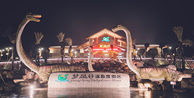
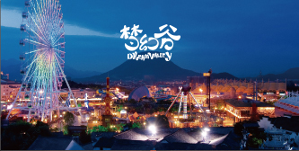
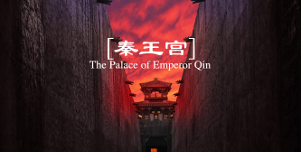
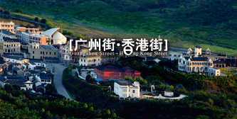
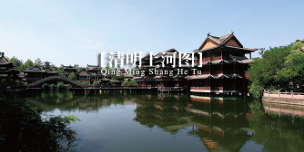
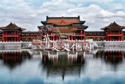
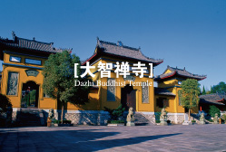
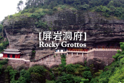
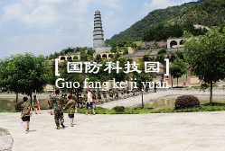

-
梦幻谷景区
梦幻谷景区是以火山爆发、暴雨山洪等各种自然现象及自然风貌展示为主要内容的国内最大的夜间影视体验主题公园，拥有梦幻般绚丽的场景、众多有惊无险的游乐项目、超大型室内高科技亲子儿童乐园-儿童梦工厂、华东地区项目最全的清凉水世界，以及两台顶级的实景演出——《梦幻太极》、《暴雨山洪》。
-

广香街夜游
香江夜艳：7月1日，华丽开幕；横店影视狂欢小镇第二家夜游狂欢地；夜酒吧、糖果屋、巧克力博物馆、冰饮店，仿若夜回民国，穿越活着的老香港。夜间大型演艺节目《香江夜艳》一场活色生香的大型夜间实景演出。
-

梦泉谷温泉度假区
横店梦泉谷温泉度假区是横店影视城着力打造的大型养生休闲度假旅游项目，集温泉养生、疗养度假、游乐戏水、生态观光为一体，年出水量达8万吨的温泉系采自地下近千米的重碳酸钠钙型含硅氟水，为温泉中的珍品。
-

秦王宫
秦王宫景区是横店影视城第二个建造起来的景区，根据秦朝咸阳宫1号宫遗址仿建而成。景区占地面积800亩，再现了秦王宫的建筑特色，"四海归一殿"高达44.8米，纵深达600米，气势磅礴、雄壮粗犷 秦王宫景区拍摄过的影视剧有：《荆轲刺秦王》、《英雄》、《无极》、《汉武大帝》、《寻秦记》、《木乃伊3》。
-

清明上河图
清明上河图景区真实还原了北宋画家张择端的千古名画《清明上河图》。景区占地面积600余亩，风光旖旎、更有亭台楼阁、轩廊水榭装点其中，再现了北宋汴京城的社会风貌、风土人情，真正是"一朝步入画中，仿佛梦回千年"。清明上河图景区拍摄过的影视剧有：《小李飞刀》、《绝代双娇》、《飞天舞》等。
-

明清宫苑
明清宫苑景区以北京故宫1：1比例而建，占地约1500亩，荟萃了京城宫殿、皇家园林、王府衙门、胡同民宅等古建精华，再现了京都风貌。主体建筑有太和殿、乾清门广场、乾清宫、坤宁宫、淑芳斋、承天门、午门、养心殿、军机处等。明清宫苑景区拍摄过的影视剧有：《金枝欲孽》《满城尽带黄金甲》《宫》《步步惊心》《后宫甄嬛传》等。
-

广州街香港街
广州街香港街景区建成于1996年，是横店影视城最早建成的景区。景区占地面积600亩，是鸦片战争前后的广州、香港的缩影。古朴的街巷、透出沧桑的铁轨和老式机车、香江、广州街、香港街仿佛亲临南国，"十三夷馆"、天下第一茶楼"天澜阁"、皇后像广场、总督府、维多利亚城街景等融汇中外文化的建筑。
-

明清民居博览城
明清民居博览城于2008年建成开放，占地面积900余亩，是集古建保护 、剧组拍摄、影视体验、节目演艺于一体的综合性影视文化旅游景区，由七侠镇影视主题街、盗墓奇幻体验馆、秦淮河影视主题区、圆明新园展馆、秦淮八艳秀场等几大部分区域组成。丰富的影视主题体验搭配极具文化内涵的人文景观，被人称为“一场穿越影视斑斓时光之旅”。
-

华夏文化园
华夏文化园占地面积600多亩，景区展示了中华民族五千年传统艺术的精华、传统建筑的典范，是一处用真材实料筑就的文化旅游名景，也是历史教育的胜地。园内主体建筑——华夏文化塔，主塔高119米，边上与之相连的是分别代表儒、道、佛的三座高66米的副塔。儒、道、佛三教合一，形成一个既分又合的整体。
-

大智禅寺
大智禅寺景区始建于南梁年间，距今已有1500多年的历史，建有天王殿、大雄宝殿、药师殿、地藏殿、罗汉堂、玉佛殿、钟鼓楼等。大智禅寺是古朴幽深，香气氤氲，气势雄伟，巍峨壮观的佛国净土，又是翠枝如黛、环境优雅的游憩怡情胜地。大智禅寺拍摄过的影视剧有：《小李飞刀》、《绝代双骄》、《活佛济公》。
-

屏岩洞府
屏岩洞府素有"江南第一洞天"美誉，景区由丹霞地貌和喀斯特地貌组成，以奇峰异洞、云山怪石著称，峭壁、幽洞、红叶、悬空建筑是景区的四大特色。主要风景点之一的"斤丝涧"一景，最为游人所钟爱，它是一条从山顶至山脚纵深裂开的岩缝，涧宽1公尺大右，深不可测。传说用一斤蚕丝系石块入涧下垂，也未能到底，所以取名为"斤丝涧"。
-

横店国防科技园
横店国防科技园景区以武器实物和模型为载体，充分展示我军在各个时期的武器装备及我国航空航天的发展历史。景区分展馆区和军事训练区两大部分，其中展馆区内设有阅兵馆、陆军重武器装备馆、海陆空装备馆、太空探索馆.....